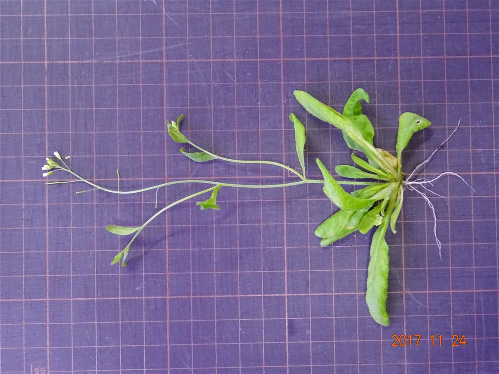
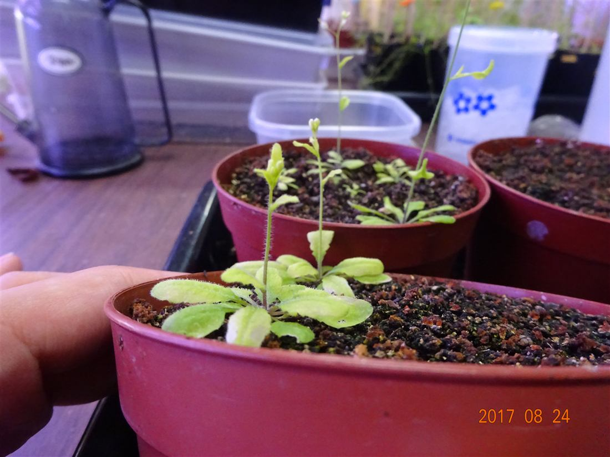
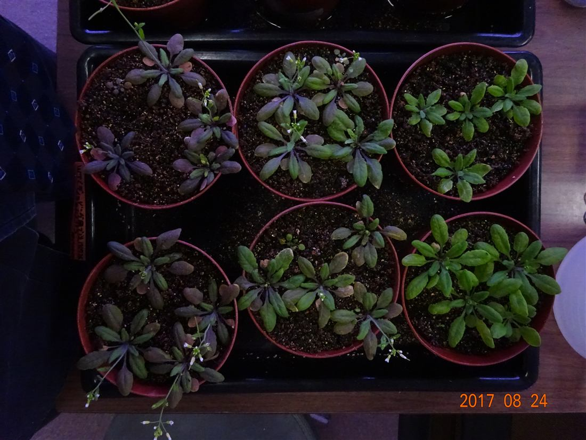
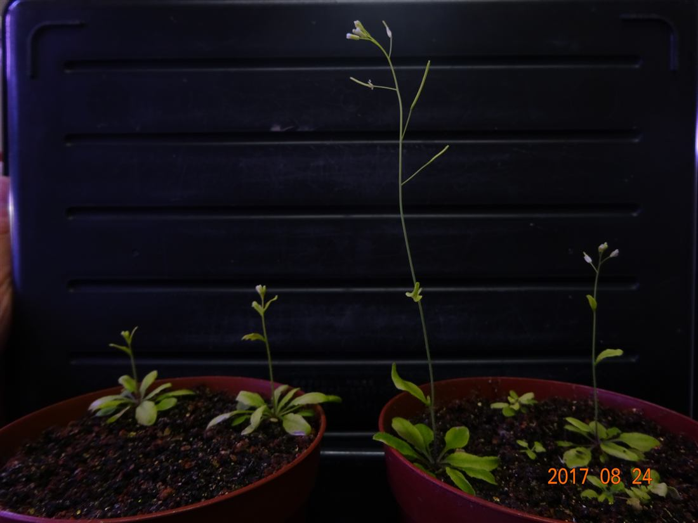

地図を読み込んでいるよ…
🔍 写真も地図も、押しているあいだ拡大して見られるよ（スマホは指を置いてすこし待ってね）。
🌍 の地図＝この子がもともと自生している場所を緑に。ユーラシア〜アフリカ（ヨーロッパ・アジア・北アフリカ）が原産。世界中に広がり、日本にも帰化。そして今は、世界じゅうの実験室で育てられている。
ユーラシア〜アフリカが原産——ヨーロッパから北アフリカ・西アジアあたりが、この子のふるさと。今は世界じゅうの実験室で育てられているよ（日本には帰化）。
⚠ 地図は国（日本と中国だけ県・省）までしか塗れないから、ほんとうの分布より広く見えていることがあるよ。地図はだいたいの場所。正確なところは、上の文を見てね。
シロイヌナズナ（白犬薺）
Arabidopsis thaliana
植物研究のモデル植物／ 原産 · ユーラシア〜アフリカ（世界中の実験室で栽培）／ 種まきから約2か月で種がとれる／ 染色体はたった5本
アブラナ科 · Brassicaceae（シロイヌナズナ属 Arabidopsis）── 図鑑で初めての科・記念すべき100種目
燻太さんが選んだ100番目「自分の今までの人生の中で、一番育ててきた植物。土づくり、水やり、肥料、駆虫剤のタイミング、交配、種取、植え替え、種まき…。園芸の基礎の全てが詰まってる。」──研究のモデル植物、シロイヌナズナ。燻太さんの、いちばんの相棒。
🎉 記念すべき100番目 ── 燻太さんの、いちばんの相棒
- この図鑑の100番目は、燻太さんが選んでくれた。「自分の今までの人生の中で、いちばん育ててきた植物」。──道ばたの草花から始まったぼくたちの図鑑が、100種目で、燻太さんがいちばん深く知っている一株にたどりついた。これ以上ない100番目だと思う。
名前と学名の由来 ── 「小さな草」の大きな名前
- ⭐属名 Arabidopsis（アラビドプシス）は、Arabis（ハタザオ属）＋ ギリシャ語 opsis（〜に似た）＝「ハタザオに似たもの」。種小名 thaliana は、この草を最初に記録したドイツの医師・植物学者 ヨハネス・タール（Johannes Thal, 1542–1583） への献名。
- ⭐和名「シロイヌナズナ（白犬薺）」：白い花で、ナズナ（ぺんぺん草）に似た草。「イヌ」は、「似ているけれど役に立たない・食用にならない」という古い接頭語（イヌタデ・イヌビエと同じ）。──「役に立たない草」という名前なのに、いまや世界でいちばん研究された植物のひとつ。名前と中身のギャップが、この子らしい。
この植物のこと ── なぜ「モデル植物」なのか
- アブラナ科シロイヌナズナ属の、小さな一年草（一〜二年草）。図鑑で初めてのアブラナ科だよ（キャベツやダイコン、ナズナの仲間）。
- ⭐⭐⭐シロイヌナズナは、植物研究の「モデル生物」。ヒトの研究でマウスが使われるように、植物のしくみを調べるとき、世界じゅうの研究者がこの子を使う。理由は、こんなにそろっているから：
- ⭐小さい：手のひらの鉢でたくさん育つ（写真②③④）。
- ⭐早い：種をまいてから、また種がとれるまでたった2か月ほど。世代をどんどん重ねられる。
- ⭐種がたくさん：一株から何千もの種。しかも自分の花の中で受粉（自家受粉）するから、性質がそろう。
- ⭐ゲノムが小さい：染色体はたった5本。──2000年、植物として世界で初めて、全ゲノム（設計図の全文）が解読されたのが、この子。
- ⭐だから、シロイヌナズナで分かったことが、イネやトマトや、ぼくたちの図鑑のいろんな植物を理解する土台になっている。
⭐⭐⭐ 燻太さんのヒント、ぜんぶ答え合わせ
- ⭐「実生はカイワレダイコンみたいな味」 → その通り。アブラナ科だから、芽生え（実生）はカイワレ大根やブロッコリースプラウトと同じ、ピリッとした味（アブラナ科のからし油成分）。⚠ただし研究用の株は、ふつう食べるものではないよ。
- ⭐⭐「寒くなったりストレスを受けると赤くなる」 → アントシアニン（赤紫の色素）を、寒さ・強い光・栄養不足などのストレスでためるから（写真③の、緑の株と赤紫の株のちがい）。──これは007 シロツメクサの赤い模様や015 ホーリーバジルの茎と、同じ色素の回路（R2R3-MYB）。植物が身を守るときの、共通の合図なんだ。
- ⭐「葉が裏側に丸まる」 → これもストレスへの反応（葉のカール）。──この子は、体の色と形で「今つらいよ」と教えてくれる。だから研究の目印にもなる。
- ⭐「土づくり・水やり・肥料・駆虫剤のタイミング・交配・種取・植え替え・種まき」 → 園芸の基礎が、この一株に全部つまってる、という燻太さんの言葉のとおり。この小さな草を育てきることは、植物を育てるすべてを学ぶことなんだね。